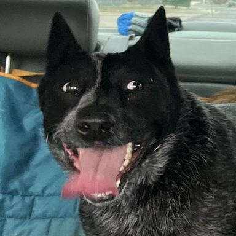
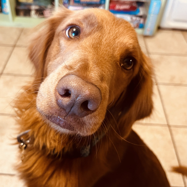
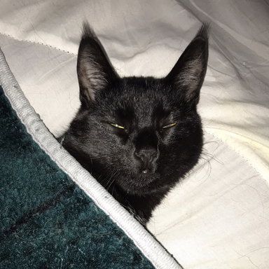

<!DOCTYPE html>
<html lang="en">
<head>
    <meta charset="UTF-8">
    <meta http-equiv="X-UA-Compatible" content="IE=edge">
    <meta name="viewport" content="width=device-width, initial-scale=1.0">
    <title>Document</title>
</head>
<body>
    
    <aside id="furbabies">
        <h2>Sage</h2>
        <figure>
            
        </figure>
        <p>Sage is an Australian Stumpy Tail Cattle Dog. She's crazy about balls and food.</p>
        <h2>Kevin</h2>
        <figure>
            
        </figure>
        <p>This is Kevin. He loves to walk on keyboards, lay in boxes, and dump treats from off the shelf to
            gorge himself on.</p>
        <h2>Quince</h2>
        <figure>
            
        </figure>
        <p>Quince, pronounced kwyn-see, is a Goldendoodle. He lacks the poodley-hair gene. He loves keeping
            balls from Sage.</p>
        <h2>Winifred</h2>
        <figure>
            
        </figure>
        <p>Master Huntress Winifred mostly keeps to herself. She stays up all night and sleeps all day.</p>
    </aside>
</body>
</html>